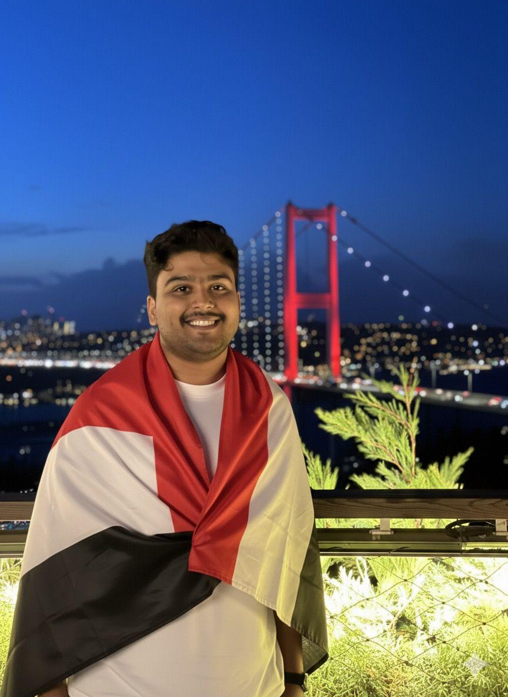

المؤتمر العام السادس

الإخوة والأخوات أعضاء اتحاد الطلاب اليمنيين في تركيا،
السلام عليكم ورحمة الله وبركاته.
إيمانًا بأن الفروع ليست مجرد امتداد إداري للاتحاد فقط، بل هي قلبه النابض، وصوته الأقرب إلى الطلاب، ووجهتهم الأولى في مختلف المدن التركية، ولأن قوة المركز تبدأ من قوة أطرافه، أتقدم إليكم بترشحي لمنصب مسؤول الفروع في الهيئة الإدارية للمؤتمر العام السادس.
أحمل بين يدي رؤية واضحة، وبرنامج عملي مدروس الحيثيات، بعيد عن الوعود الرنانة، ومنطلق من واقع الفروع واحتياجاتها؛ بهدف ترقية أدائها، وتوحيد جهودها، وتعزيز حضور الطالب اليمني في عموم المدن التركية.
وبإذن الله ثم ثقتكم، سنعمل معًا ليكون شعارنا واقعًا ملموسًا:
فروع أكثر حيوية وتجدد
سأعمل جاهدًا مع أعضاء الهيئة الإدارية، لا سيما قسم العلاقات، والقسم الأكاديمي، ورئاسة الاتحاد، على بدء مراسلات وزيارات رسمية للجامعات في عموم تركيا، بهدف إيجاد تسهيلات أو مقاعد مجانية للطلاب اليمنيين وفق شروط القبول الخاصة بهم، بما يُسهم في التسهيل على الطلاب اليمنيين الجدد ويُضيف دماء جديدة للفروع المختلفة.
تسهيلات جامعية أوسع، فرص أقرب للطلاب.
نعرف طلابنا أولًا… لنحل مشاكلهم ثانيًا
سأعمل مع هيئات الفروع على إعداد قاعدة بيانات دقيقة تشمل الطلاب والطالبات في مختلف المدن التركية، مع انتداب مندوبين في المدن التي لا توجد فيها كثافة طلابية أو لا تضم فرعًا رسميًا. كما سنعمل على نشر استبيانات دورية لحصر أبرز المشاكل، ثم تحويلها إلى مصفوفة حلول واقعية، واضحة، وقابلة للتنفيذ.
معرفة أدق بالطلاب، وفهم أوضح للمشاكل، وحلول عملية تصل إلى أصحابها.
حضور ميداني يصنع الفرق
سأعمل بالتعاون مع رئاسة الاتحاد وقسم العلاقات على تنظيم زيارات ميدانية رسمية للفروع بطابع مؤسسي، تشمل حجز مواعيد مسبقة مع إدارات الجامعات، والتنسيق الإداري الكامل مع الجهات المجتمعية في تلك المدن بهدف مساندة الفرع وتعزيز حضوره.
تمثيل يليق بالاتحاد، وحضور ميداني يمنح الفروع ثقلًا حقيقيًا أمام الجامعات والجهات المعنية.
صوت الفرع لن يغيب عن طاولة القرار
سأعمل على طرح مشاكل ومتطلبات الفروع بشكل دوري ومنظم في اجتماعات الهيئة الإدارية، وتوجيه الاهتمام نحوها، وضمان متابعتها، على أن أكون خط الدفاع الأول عن قضايا الفروع داخل أروقة الهيئة.
أن يكون لكل فرع صوت حاضر، ومطلب مُتابع، وأثر واضح في قرارات الهيئة الإدارية.
صقل الكوادر قبل توزيع المهام
سأعمل على تنظيم دورات تدريبية في بداية كل دورة انتخابية، تتناول مهارات العمل النقابي، وكيفية صياغة الأهداف والخطط السنوية، إلى جانب الخبرات التي يحتاجها كل فرع لإدارة دورته بكفاءة وتميز. فالكادر المؤهل يصنع فرعًا فاعلًا.
بناء كوادر واعية ومؤهلة، قادرة على إدارة الفروع بخطة واضحة وعمل مؤسسي يستمر أثره.
نرعى الفكرة حتى تصبح أثرًا
سأعمل على تبني المشاريع المميزة ضمن خطط الفروع شخصياً، ومساندتها إداريًا وتنظيميًا، والعمل على تذليل الصعاب أمامها حتى ترى النور وتحقق أثرها بين الطلاب.
تحويل أفكار الفروع الواعدة إلى مشاريع ناجحة، ودعم المبادرات التي تصنع فرقًا حقيقيًا في الواقع الطلابي.
ترفيه يجمعنا وذاكرة تُبنى
سأعمل بالتنسيق مع مسؤول الأنشطة والعلاقات العامة على بدء المراسلات اللازمة مع وزارة الشباب والرياضة ومنظمات المجتمع المدني، لإقامة مخيم صيفي للطلبة اليمنيين يجمع بين الترفيه، وتعزيز الانتماء، وبناء روابط أخوية بين فروع الاتحاد. مساحة نتنفس فيها وطنًا، ونصنع منها ذكريات تبقى لسنوات قادمة.
خلق مساحة شبابية جامعة، تُقرب الفروع من بعضها، وتعزز روح الانتماء والأخوة بين الطلاب اليمنيين في تركيا.
قيم ومبادئ تحكم منهجنا في العمل الاتحادي وخدمة الطلاب.
آراء وتجارب زملاء العمل النقابي وقيادات الفروع.
خلال فترة عمله، أظهر محمد مستوىً استثنائيًا من المهنية، الجدية، والالتزام في جميع المهام الموكلة إليه. لقد كان عنصرًا حيويًا في فريقنا، وقد لمستُ بشكل مباشر مساهماته القيمة. تميز محمد بالعمل الجاد والمثابرة، كان يعمل بجد كبير لضمان إنجاز المهام في الوقت المحدد وبأعلى معايير الجودة. أظهر حزمًا كبيرًا في إدارة مسؤوليات الأمانة العامة والأرشيف، مما ضمن دقة التنظيم وسلامة الوثائق والبيانات الهامة. كانت قدرته على إدارة وتنظيم الأرشيف والمستندات بفاعلية أمرًا يستحق الثناء، مما سهل سير العمل للفريق بأكمله.
عندما تُستحضر معاني العمل الدؤوب، والإبداع في التنفيذ، والإصرار على تحدي الصعاب، والثبات حتى الوصول إلى الهدف، أتذكر البش مهندس محمد زكي، رئيس لجنة الرقابة والتقييم، والذي كان ـ بعد توفيق الله ـ أحد الأسباب المهمة في رفع مستوى العمل في مدينة كارابوك، وإثبات تفوقها على مستوى الفروع. ولا أنسى الخبرة التي يتمتع بها في تقييم الأداء، ووضع النقاط على الحروف وفق الوقت والجهد والحاجة. إذ أراه الشخص المناسب للمنصب الذي ترشح له، ونحن معه حتى تقلّد المنصب ونيل الثقة بإذن الله.
بسم الله الرحمن الرحيم
في خضم العملية الانتخابية الحالية لاتحاد الطلبة اليمنيين في تركيا، يسعدني أن أرفع هذه التوصية بحق الأخ محمد زكي، الذي عرفته عن قرب ونتاجاً لما رأيته منه من جدّيته وتفانيه في العمل، ورجاحة رأيه، والتزامه الدائم بأُطر العمل الرسمية في مختلف المهام التي أوكلت إليه. وانطلاقًا من هذه الصفات المشهودة، أوصي بانتخابه، لما أثق أنه سيقدّمه من متابعة دقيقة وجادة، وضمان سير الأعمال بما يليق باسم الأشقاء اليمنيين ويمثلهم خير تمثيل. والله ولي التوفيق.
بصفتي رئيس جمعية الطلبة العراقيين في كارابوك، يشرفني أن أوصي وأدعم زميلي العزيز محمد زكي في ترشحه لانتخابات الاتحاد اليمني. لقد عرفت الأخ محمد عن قرب، وهو يتميز بالجدية، وروح التعاون، والحرص على خدمة الطلبة والعمل الجماعي. أثق بأنه سيكون إضافة قيّمة ويمثل صوت الشباب والطلبة بأمانة ومسؤولية.
شغل محمد زكي منصب الأمين العام لاتحاد الطلاب اليمنيين في كارابوك خلال الدورة التاسعة 2023–2024، وكنت حينها أتولى مهام مسؤولة الطالبات. ومن خلال عملي معه عن قرب، لمست فيه روح المسؤولية والالتزام بصورة استثنائية. وكما هو معروف، فإن العمل في الاتحاد الطلابي عمل تطوعي، لا يُلزم أحدًا بتقديم ما يفوق طاقته، إلا أن محمد زكي لم يتعامل مع الأمر بهذا المنطق أبدًا، بل تحمّل مسؤولياته بكل جدية وأمانة، وقدم من الجهد والعمل ما يفوق المتوقع منه. كان دائم المبادرة في طرح الحلول للمشكلات، واقتراح أفكار تطويرية تسهم في تحسين سير العمل، بل كان يتحمل مسؤولية تنفيذها بنفسه. أراه إضافة حقيقية وقيمة لأي جهة يعمل بها.
لأن الطالب اليمني في الخارج يستحق اتحادًا يكون له وطنًا بديلًا،
ومرجعًا موثوقًا، وسندًا حقيقيًا في غربته.
إن ما طُرح في هذه الصفحات ليس وعودًا عابرة تُكتب لتُنسى، بل التزام صادق، وخطة عملية قابلة للتنفيذ والقياس والمحاسبة.
وأنا على ثقة بأن تحقيقها يبدأ بثقتكم، وينمو بتعاوننا، ويُثمر بإخلاصنا جميعًا.
فالتطوع لمن أراد، والمحاسبة للجميع؛ لأن العمل المؤسسي لا ينهض إلا بالإخلاص، ولا يستمر إلا بالمسؤولية.